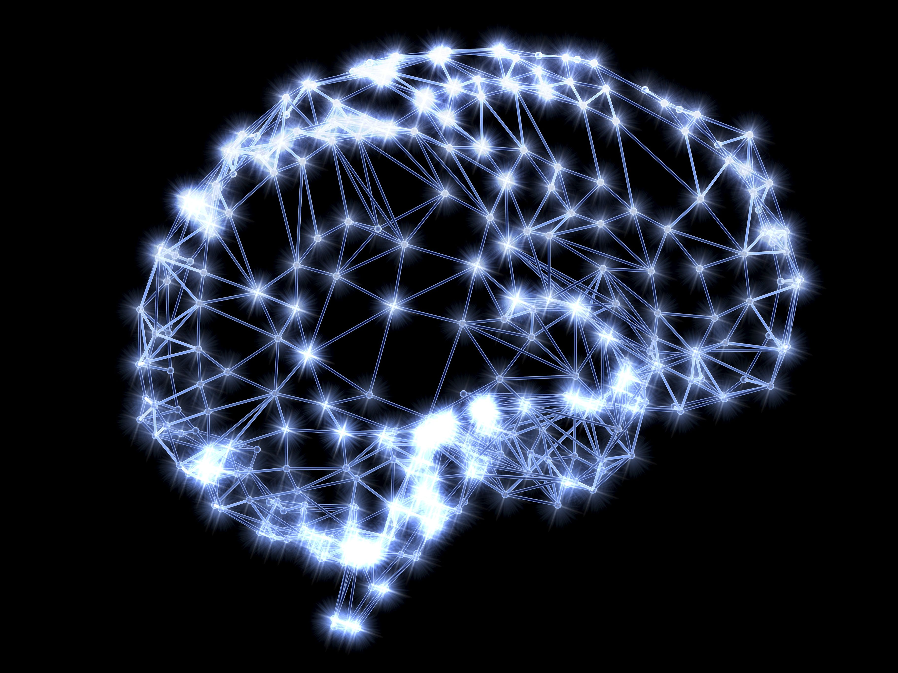
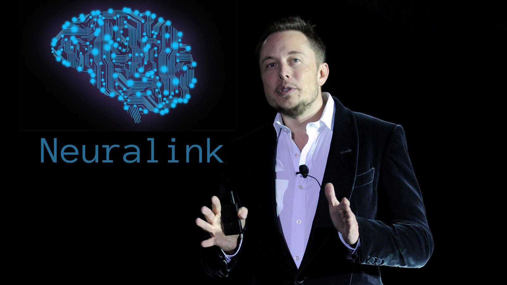

NEURALINK

wikipedia
Neuralink's device has a chip that processes and transmits neural signals
that could be transmitted to devices like a computer or a phone. The company hopes that a person would potentially be able to control a mouse, keyboard or other computer functions like text messaging with their thoughts
ELON MUSK

Tesla billionaire Elon Musk is known for high-profile companies like Tesla and SpaceX, but the billionaire also has a handful of unusual ventures. One them, he says, he started to one day achieve "symbiosis" between the human brain and artificial intelligence.
Neuralink is Musk's neural interface technology company. Simply put, it is building technology that could be embedded in a person's brain, where it could both record brain activity and potentially stimulate it.
While Musk likes to talk up his futuristic vision for the technology, merging human consciousness with AI, the tech has plenty of near-term potential medical applications such as the treatment of Parkinson's disease.